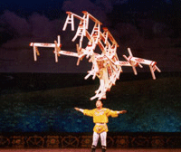

|
we saw Bigger Splash last night on Arte - the euro art TV - 1972 David Hockney restless - breaking up with the bf - moving to the States
i woke this morning and realized there had been no computer - no email - people made calls from pay phones - the only music was a car radio - yet London looked just the same all those 30 years ago - the same tacky clothes pre-revisited - and all DH had to do was strive to make paintings - nice postcards to send to friends
no doubt we saw Wings of Desire when it first came out in 87 - probably at the Lumiere cinema in St Martins Lane - a whole era is recaptured remembering the queue for the toilets on a packed opening night - it closed suddenly when the owner died - and now lies empty under a trendy hotel
i can remember Bruno Ganz wistful - up on high - and the trapeze girl with all her hair - it wasn't such a great movie then - but it must be ripe like an old wine to see in KL today
once when i was a mere beginner i went to see Felinni's Juliet of the Spirits at an art cinema in Newcastle upon Tyne - i was the only customer - middle of the front row - some student girl doubling as usherette - patient at the back
perhaps if i sat here all day i might work out what happened over the past 30 years to the sad history of desire - a man waiting to get reenabled
tonight we go to the circus

|